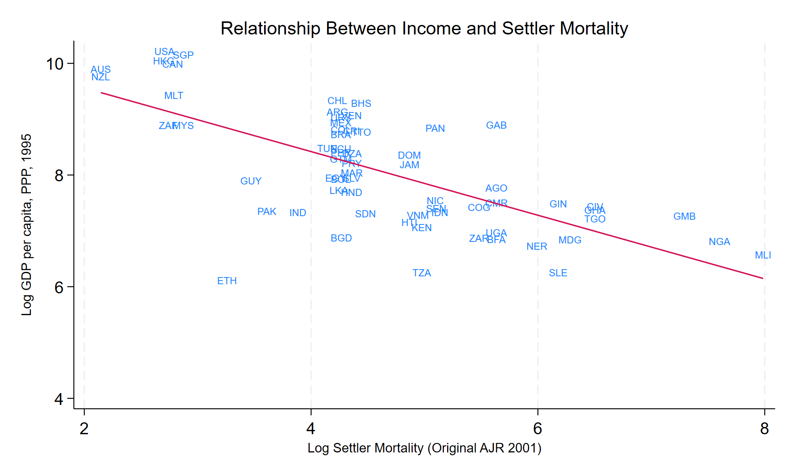
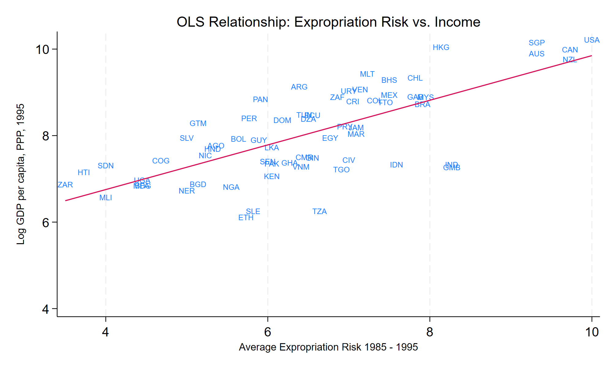
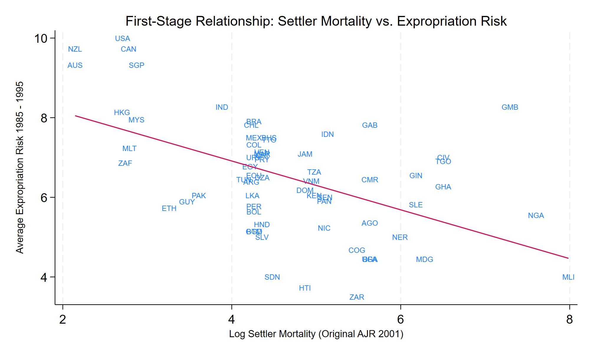
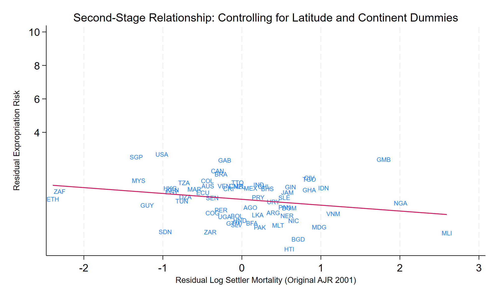
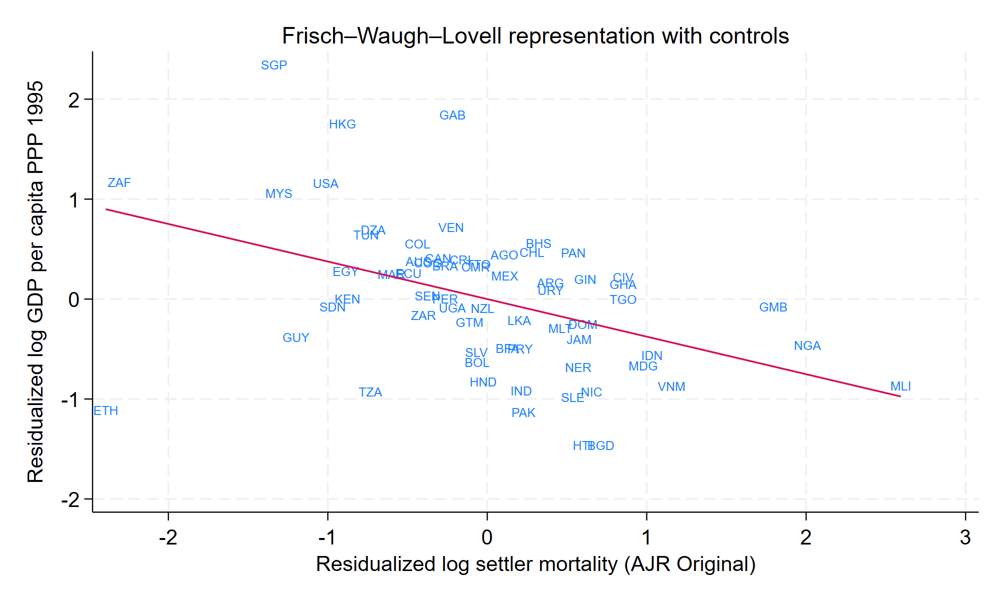

Final project for Advanced Econometrics I
Is Settler Mortality a Valid Instrument?: Identification, Inference, and Sensitivity in the AJR Framework
February 2, 2026.
Abstract
This paper evaluates the validity of the settler mortality instrument proposed by Acemoglu, Johnson, and Robinson (2001), as claimed in their 2012 response to Albouy. It treats the debate on the origins of the colonies as a case study in the identification and inference of instrumental variables. Using the AJR (2012) replication dataset, I reproduce the baseline first- and two-stage least squares estimates, examining the instrument's relevance and credibility under alternative assumptions. I demonstrate how inferences change according to instrument construction, variance–covariance assumptions, clustering schemes, and weak-instrument-robust procedures, including Anderson–Rubin confidence sets. By comparing reduced-form, first-stage, and structural estimates across benchmark and capped mortality measures, the analysis reveals the impact of measurement error and influential observations on causal conclusions. The results suggest that, although point estimates of institutional effects are relatively stable, statistical inference is sensitive to identification and inference choices. This work emphasises the importance of transparent diagnostics in applied instrumental variables (IV) work. Beyond replication, this paper presents a fully reproducible, code-integrated workflow designed to promote methodological understanding and support graduate-level teaching of instrumental variables.
1. Introduction
Acemoglu, Johnson, and Robinson (2001) open with a foundational question in development economics: why does income per capita differ so sharply across countries? These disparities remain striking today, as illustrated by contemporary World Bank data. The authors engage with a large body of literature emphasizing the role of institutions—particularly property-rights institutions—in shaping incentives for physical and human capital accumulation and, ultimately, long-run economic performance. A central empirical challenge in this literature is endogeneity, arising from both reverse causality and omitted institutional, political, and geographic factors. Early cross-country studies struggled to address this problem due to the absence of a credible source of plausibly exogenous variation in institutional arrangements.
The theory proposed by Acemoglu et al. (2001) locates the origins of contemporary institutional differences in the heterogeneous experiences of colonization undertaken by European powers. According to the authors, colonization strategies decisively shaped the types of institutions established in different territories. They identify two polar institutional regimes. At one extreme were extractive states, designed primarily to maximize the transfer of resources from the colony to the colonizer. These institutions offered weak protection of property rights, limited constraints on political authority, and relied heavily on local elites to enforce control over the population. At the other extreme were “Neo-Europes,” where colonizers sought to replicate or extend European institutional frameworks, particularly common-law traditions, strong protections against expropriation, and limits on arbitrary state intervention.
Figure 1 provides a descriptive snapshot of cross-country income disparities using World Bank GDP per capita (PPP) data for 2024.
Crucially, Acemoglu et al. (2001) argue that the choice between these institutional strategies was not arbitrary but depended on the feasibility of European settlement, which they proxy using historical settler mortality rates. In regions where settler mortality was low, European settlement was viable, increasing the likelihood that Neo-European institutions would be established. Conversely, in regions where mortality risks were high and permanent settlement was infeasible, colonizers were more likely to impose extractive institutions aimed at short-run resource extraction rather than long-run development. At the same time, these mechanisms underscore the importance of carefully assessing whether settler mortality affects contemporary outcomes exclusively through institutions, or whether additional channels may remain operative.
The authors further contend that these early institutional choices persisted well beyond independence through three main economic mechanisms. First, institutional change is costly, particularly when incumbent elites benefit from existing arrangements and thus resist reforms that would dilute their power. Second, the returns to extractive institutions depend on the size and cohesion of the ruling elite: smaller, more concentrated elites face stronger incentives to preserve extractive systems that disproportionately benefit them. Third, institutional persistence is reinforced through complementary irreversible investments, as economic agents become more willing to support existing institutions when their livelihoods, assets, and expectations are tightly bound to them. Together, these mechanisms generate strong path dependence, linking colonial-era institutions to contemporary economic outcomes, while also complicating the empirical task of isolating a single causal transmission channel.
Empirically, Acemoglu et al. (2001) address the endogeneity problem by instrumenting contemporary institutional quality with historical settler mortality, arguing that mortality influenced long-run development outcomes only through its effect on the colonial institutions that Europeans established. This instrumental-variables (IV) strategy has become one of the most influential empirical designs in modern political economy, shaping a large subsequent literature on institutions, development, and state capacity. The validity of this IV strategy rests on two key conditions: relevance, which requires settler mortality to predict institutional quality, and the exclusion restriction, which requires mortality to affect contemporary income only through its impact on institutions. To visually anchor the causal argument, the authors present the reduced-form relationship between settler mortality and income per capita. They show a strong negative association between log GDP per capita (PPP, 1995) and log settler mortality, which they interpret as evidence that mortality operates through the institutional structures imposed during colonization (Acemoglu, Johnson, & Robinson, 2001).
Stata Code Block: Figure 2 Reduced Form AJR replication graph
twoway ///
(scatter loggdp logmort0, ///
msymbol(i) /// invisible marker; safer than msymbol(none)
mlabel(shortnam) ///
mlabposition(0) ///
mlabsize(vsmall) ///
) ///
(lfit loggdp logmort0), ///
legend(off) ///
ytitle("Log GDP per capita, PPP, 1995", size(small)) ///
xtitle("Log Settler Mortality (Original AJR 2001)", size(small)) ///
title("Relationship Between Income and Settler Mortality", size(medium)) ///
graphregion(color(white)) ///
ylab(4(2)10, nogrid)
Rather than delivering a binary verdict on the validity of the instrument, the analysis documents how causal inference varies with instrument construction, variance–covariance assumptions, and weak-instrument-robust procedures. While a full evaluation of the identification strategy would also require careful theoretical scrutiny of the exclusion restriction, this paper deliberately focuses on the econometric dimensions of identification and inference. In particular, the analysis evaluates instrument relevance and robustness, while situating the empirical findings within a broader historical and conceptual interpretation discussed elsewhere.
2. Instrumental Variables Framework and Identification
2.1 Structural Relationship and OLS Benchmark
Let's begin by formalizing the empirical relationship between contemporary income levels and institutional quality, following Acemoglu, Johnson, and Robinson (2001). Let i index countries. The baseline cross-country specification relates log income per capita to a measure of institutional quality:
where log (GDPi) denotes the logarithm of GDP per capita (PPP-adjusted, 1995) in country i, Riski measures the average protection against expropriation risk and serves as a proxy for institutional quality, and Xi is a vector of additional controls, including geographic and regional characteristics.
Ordinary least squares (OLS) estimation of this relationship does not generally identify the causal effect of institutions on income. The key identification problem is that institutional quality is endogenous, implying:
Three sources of endogeneity plague OLS inference in this setting. First, reverse causality may arise if higher income levels enable societies to invest in better institutions, biasing OLS estimates upward. Second, omitted confounders, such as geography, disease burden, or historical conditions, may independently affect both institutional development and productivity, leading to bias of ambiguous direction. Third, measurement error in expert-based institutional indicators can generate attenuation bias, pushing OLS coefficients toward zero. As a result, OLS estimates cannot be interpreted as causal. These concerns motivate the use of an instrumental variables strategy.
2.2 Instrumental Variables Strategy
To address endogeneity in institutional quality, the analysis implements a two-stage least squares (2SLS) strategy based on historically predetermined variation in European settler mortality during the colonial period. The identification strategy follows Acemoglu, Johnson, and Robinson (2001), who argue that mortality conditions shaped colonial settlement patterns and, through them, the institutional arrangements established in different territories.
The first stage links contemporary institutional quality to historical settler mortality:
where settler mortality captures the disease environment faced by Europeans at the time of colonization, and Xi includes geographic and regional controls. The underlying hypothesis is that low-mortality environments facilitated permanent European settlement and the establishment of institutions protecting property rights, whereas high-mortality environments favored extractive institutional arrangements designed for short-run resource extraction.
In the second stage, the predicted component of institutional quality from the first stage is used to estimate its causal effect on economic performance:
By isolating the variation in institutions driven by historical mortality conditions, the 2SLS framework seeks to identify the causal impact of institutional quality on long-run income, abstracting from reverse causality and omitted historical or geographic factors.
2.3 Identification Assumptions
The instrumental variables strategy proposed by Acemoglu, Johnson, and Robinson (2001) relies on a set of identifying assumptions that link historical mortality conditions to contemporary economic outcomes through the institutional channel. These assumptions are standard in instrumental variables analysis but acquire specific substantive content in the colonial context studied by the authors.
Settler mortality must be a strong predictor of institutional quality, this is the relevance assumption on the instrument. In the AJR framework, this condition reflects the claim that mortality conditions faced by Europeans during the colonial period shaped settlement decisions and, through them, the institutional arrangements established in different territories. Low mortality environments facilitated permanent European settlement and the transplantation of institutions protecting property rights, whereas high mortality environments discouraged settlement and favored extractive institutional regimes. Formally, relevance requires that settler mortality enter the first-stage relationship between mortality and institutional quality with a nonzero coefficient. This condition is empirically testable and constitutes a necessary requirement for the IV strategy.
Other assumption is on the exclusion restriction. Conditional on observed controls, settler mortality must affect contemporary income only through its impact on institutions. That is, historical mortality conditions should not exert a direct influence on modern productivity, technology, or income outside the institutional channel. Acemoglu et al. (2001) argue that this restriction is plausible because settler mortality primarily captured the disease environment confronting Europeans rather than indigenous populations, and because its economic consequences operated through the colonization strategies and institutional choices induced by settlement feasibility. Under this interpretation, mortality influences long-run development insofar as it shaped the political and economic institutions established during colonization and subsequently persisted. While the exclusion restriction is not directly testable, its credibility depends on whether alternative channels—such as persistent geographic or epidemiological effects—can be ruled out or adequately controlled for.
The identification strategy further assumes monotonicity: higher settler mortality should not increase the likelihood that inclusive, property-rights-protecting institutions were established in any colony. In the AJR narrative, mortality uniformly discouraged permanent European settlement and thus systematically shifted colonies toward more extractive institutional arrangements. Although monotonicity cannot be tested empirically, it is consistent with the historical logic underpinning the instrument and rules out the existence of “defiers” for whom higher mortality would have led to more inclusive institutions.
Taken together, these assumptions imply that the two-stage least squares estimator identifies the causal effect of institutions on income for the subset of countries whose institutional trajectories were influenced by mortality-induced variation in colonial settlement patterns. As such, the IV estimates should be interpreted as reflecting a local average treatment effect, rather than a universal structural relationship.
2.4 Why is the settler mortality rate may or may not be exogenous?
The credibility of settler mortality as an instrument depends not only on the theoretical plausibility of the identification assumptions but also on the quality and consistency of the historical data used to operationalize mortality risk [Albouy, 2012; Acemoglu et al., 2001]. This issue has been the focus of substantial debate following the critique by Albouy (2012), who argues that heterogeneity in the construction of mortality measures across colonies undermines the empirical foundations of the AJR instrument.
Albouy’s central concern is that recorded mortality rates do not correspond to a uniform population of European settlers [Albouy, 2012]. In some colonies, mortality figures are derived from soldiers stationed temporarily in high-risk environments; in contrast, in others, they reflect the mortality of clerical figures, such as bishops, or other non-comparable groups [Albouy, 2012]. As a result, the mortality variable may conflate fundamentally different exposure contexts, introducing non-classical measurement error and reducing comparability across observations [Albouy, 2012]. Such heterogeneity has two potential implications for identification: first, it may weaken instrument relevance by attenuating the relationship between mortality and institutional quality; second, it may compromise the exclusion restriction if mortality measures proxy for broader geographic or epidemiological conditions that directly affect long-run economic outcomes [Albouy, 2012].
In their reply, Acemoglu, Johnson, and Robinson (2012) address these concerns by constructing alternative mortality measures, including capped and subsample-restricted versions, and by demonstrating the robustness of their main results to these alternative codings [Acemoglu et al., 2012]. Their response emphasizes that, while historical mortality data are inevitably imperfect, the core identifying variation—differences in settlement feasibility driven by disease environments—remains intact across reasonable measurement choices [Acemoglu et al., 2012].
Rather than treating this exchange as a binary dispute over instrument validity, the present analysis interprets it as highlighting the sensitivity of instrumental variables inference to instrument construction and data quality [Albouy, 2012; Acemoglu et al., 2001]. Differences in mortality coding affect not only point estimates, but also first-stage strength, standard errors, and the reliability of conventional inference procedures [Albouy, 2012]. Consequently, the credibility of the settler mortality instrument cannot be assessed independently of the inferential framework used to evaluate it.
This perspective motivates a systematic examination of how causal conclusions vary with alternative mortality measures, variance–covariance assumptions, and weak-instrument-robust methods [Albouy, 2012]. By explicitly linking measurement issues to identification strength and inference reliability, the analysis situates the AJR–Albouy debate within a broader econometric framework that emphasizes transparency and sensitivity in applied instrumental variables research [Acemoglu et al., 2001; Albouy, 2012].
2.5 Inference and Weak Identification
Even when the relevance condition appears satisfied—as assessed by first-stage F-statistics exceeding conventional thresholds such as the Stock–Yogo critical values—standard inference procedures may remain unreliable in finite samples or under weak identification (Staiger & Stock, 1997; Stock & Yogo, 2005). In such settings, conventional Wald-based confidence intervals and hypothesis tests can exhibit severe size distortions, leading to misleading conclusions about statistical significance.
To address these concerns, the analysis employs inference procedures that remain valid under weak or partial identification. In particular, Anderson–Rubin (AR) confidence sets are used to conduct inference on the causal effect of institutions without relying on strong first-stage assumptions (Anderson & Rubin, 1949). Unlike standard 2SLS-based inference, AR procedures are robust to weak instruments and maintain correct coverage even when instrument strength is limited. In addition, the analysis examines the sensitivity of inference to alternative variance–covariance estimators and clustering schemes, following the insight that inference in cross-country settings can be highly sensitive to assumptions about error dependence and heteroskedasticity (Andrews & Stock, 2005; Finlay, Magnusson, & Schaffer, 2009). By varying these assumptions, the analysis assesses whether conclusions about institutional effects are driven by modeling choices rather than by underlying identifying variation.
Taken together, these inferential tools allow for credible inference on the causal impact of institutional quality under weaker assumptions about instrument strength and error structure. Rather than treating statistical significance as a binary outcome, this approach emphasizes the range of causal effects consistent with the data under alternative and transparent inferential assumptions. These considerations motivate the robustness and sensitivity analyses presented in Section 6, which examine how inference varies across alternative instrument constructions, samples, and variance–covariance assumptions.
3. Data and Descriptive Statistics
The empirical analysis uses the country-level dataset originally assembled by Acemoglu, Johnson, and Robinson (2001) and updated in their 2012 reply. The dataset contains 64 observations across 31 variables and is available in Stata, Excel, and text formats. It combines contemporary economic outcomes with historical, geographic, and epidemiological measures intended to capture colonial conditions and institutional development.
The primary outcome variable is log GDP per capita, measured in purchasing power parity–adjusted 1995 dollars. Institutional quality is proxied by an index of protection against expropriation risk, drawn from the Political Risk Services (PRS) Group and averaged over the period 1985–1995. This index ranges from 0 to 10, with higher values indicating stronger protection of property rights. The key instrumental variable is the logarithm of European settler mortality (logmort0), constructed from historical sources documenting deaths per 1,000 Europeans per annum during the colonial period.
In their 2012 reply, Acemoglu, Johnson, and Robinson supplement the original mortality measure with a set of alternative codings designed to address concerns about measurement error and sample heterogeneity raised by Albouy (2012). These include mortality benchmarks based on Caribbean conditions, measures derived from naval station records, and versions capped to limit the influence of extreme observations. While the baseline analysis relies on the original mortality measure from the 2001 study, alternative codings are examined in the robustness and sensitivity analyses presented in Section 6.
The replication materials include a limited set of control variables relative to those discussed in the original publication. Accordingly, the analysis focuses on the core covariates available in the AJR dataset, including absolute latitude, malaria prevalence in 1994, and the share of the population of European descent in 1975. Countries are also classified into mutually exclusive regional groups—Neo-Europes, Africa, Asia, and Other—to capture broad differences in colonial settlement patterns. All variables follow the original AJR definitions and coding conventions, and missing values are coded as NA.
Table 1 reports definitions and measurement details for the core variables used in the analysis.
| Variable | Definition and Measurement |
|---|---|
| logmort0 | Log settler mortality (original AJR). Deaths per 1,000 per annum among European colonists, 1600–1800s. Source: historical records, military registers, colonial archives. |
| risk | Protection against risk of expropriation. Expert survey (PRS Group) rating on a 0–10 scale, where 10 denotes full security of property rights. Averaged over 1985–1995. |
| loggdp | Log GDP per capita, PPP-adjusted. Measured circa 1995 in 1990 USD, from the Penn World Table. Represents long-run average income. |
| latitude | Absolute latitude of the country’s centroid, normalized to a 0–1 scale. Controls for geography and disease environment. |
| malfal94 | Falciparum malaria prevalence index (1994), ranging from 0 to 1. Controls for direct disease burden effects. |
| edes1975 | Percentage of population of European descent in 1975, ranging from 0 to 100. Controls for population composition effects. |
The 64 countries in the sample are distributed across regions as follows: Sub-Saharan Africa (21 countries), Latin America (18 countries), Asia and the Pacific (15 countries), and Neo-European countries (10 countries, including the United States, Canada, Australia, and New Zealand).
Table 2 presents descriptive statistics for the core variables, reported for the full sample and for subsamples defined by quartiles of log settler mortality. Following Acemoglu, Johnson, and Robinson (2001), this disaggregation illustrates how initial colonial conditions are associated with systematic differences in institutional quality, income levels, and related characteristics. Countries in the lowest mortality quartiles—where European settlement was more feasible—exhibit higher average protection against expropriation, higher contemporary income per capita, and a larger share of population of European descent. In contrast, countries in the highest mortality quartiles display weaker institutional indicators, lower income levels, and substantially higher malaria prevalence.
Stata Code Block: Table 2 Summary Statistics Region group means and standard deviations
* quietly {
* Core variables (as requested)
global VARS loggdp risk latitude edes1975 malfal94 logmort0
*------------------------------------------------------------
* 1) Create quartiles of logmort0 within the replication sample
*------------------------------------------------------------
capture drop qmort
xtile qmort = logmort0, nq(4)
label define qmort_lbl 1 "Q1 (lowest)" 2 "Q2" 3 "Q3" 4 "Q4 (highest)", replace
label values qmort qmort_lbl
label var qmort "Quartiles of log settler mortality (logmort0)"
*------------------------------------------------------------
* 2) Collect mean/sd for All + each quartile; build mean (sd)
*------------------------------------------------------------
tempfile stats lbls
postfile S str20 var str12 group double mean sd using `stats', replace
* All (overall)
foreach v of global VARS {
quietly summarize `v'
post S ("`v'") ("All") (r(mean)) (r(sd))
}
* Quartiles (Q1–Q4)
forvalues q = 1/4 {
foreach v of global VARS {
quietly summarize `v' if qmort==`q'
post S ("`v'") ("Q`q'") (r(mean)) (r(sd))
}
}
postclose S
* Variable labels for readable row names
postfile L str20 var str80 varlabel using `lbls', replace
foreach v of global VARS {
local lab : variable label `v'
if "`lab'"=="" local lab "`v'"
post L ("`v'") ("`lab'")
}
postclose L
*------------------------------------------------------------
* 3) Reshape to AJR-style wide table and export (single sheet)
*------------------------------------------------------------
preserve
use `stats', clear
merge m:1 var using `lbls', nogen
gen mean_sd = string(mean,"%9.3f") + " (" + string(sd,"%9.3f") + ")"
keep varlabel group mean_sd
reshape wide mean_sd, i(varlabel) j(group) string
* Column order: All, then Q1–Q4
order varlabel mean_sdAll mean_sdQ1 mean_sdQ2 mean_sdQ3 mean_sdQ4
rename mean_sdAll All
rename mean_sdQ1 Q1
rename mean_sdQ2 Q2
rename mean_sdQ3 Q3
rename mean_sdQ4 Q4
* Ensure Excel contains only this sheet
capture erase "assets/tables/00_baseline_summary.xlsx"
export excel using "assets/tables/00_baseline_summary.xlsx", ///
sheet("Table1", replace) firstrow(variables),
export delimited using "assets/tables/Table1.csv", replace
restore
}| Variable | All | Quartiles of log settler mortality | |||
|---|---|---|---|---|---|
| Q1 | Q2 | Q3 | Q4 | ||
| Absolute latitude | 0.181 (0.133) | 0.290 (0.171) | 0.159 (0.094) | 0.151 (0.104) | 0.113 (0.060) |
| Average protection against expropriation risk | 6.516 (1.469) | 7.744 (1.464) | 6.365 (0.977) | 5.974 (1.319) | 5.890 (1.297) |
| Log GDP per capita (contemporary) | 8.051 (1.048) | 8.875 (1.194) | 8.328 (0.611) | 7.735 (0.806) | 7.199 (0.624) |
| Log settler mortality (original AJR) | 4.647 (1.253) | 3.224 (0.718) | 4.294 (0.047) | 4.881 (0.357) | 6.347 (0.754) |
| Malaria prevalence, 1994 | 0.395 (0.433) | 0.135 (0.211) | 0.039 (0.058) | 0.469 (0.453) | 0.948 (0.004) |
| Percent of European descent, 1975 | 18.067 (29.627) | 37.076 (44.926) | 26.667 (21.767) | 7.412 (11.969) | 0.000 (0.000) |
These descriptive patterns document strong correlations between colonial settlement conditions, institutions, and long-run economic outcomes. At the same time, they underscore the need for an econometric framework capable of disentangling causality from endogenous relationships, which motivates the instrumental variables strategy developed in subsequent sections.
4. Results
4.1 OLS Estimates and Motivation for IV
Table 3 reports ordinary least squares (OLS) estimates from a set of baseline specifications that replicate the structure of Acemoglu, Johnson, and Robinson’s (2001) original analysis. The dependent variable is log GDP per capita (PPP-adjusted, circa 1995), and institutional quality is proxied by the average index of protection against expropriation risk.
The first column presents a parsimonious specification regressing income per capita solely on institutional quality. Subsequent columns sequentially introduce geographic controls, beginning with absolute latitude, and then add continent fixed effects for Asia, Africa, and Other regions. This progression allows for systematic differences in income levels associated with geography and broad regional characteristics.
Across all specifications, the estimated coefficient on institutional quality is positive and statistically significant at conventional levels. The magnitude of the coefficient declines modestly as additional controls are introduced, but remains economically meaningful throughout. These estimates indicate a strong unconditional association between institutions and income levels, consistent with the patterns documented in Acemoglu et al. (2001).
Stata Code Block: Table 2 OLS Estimates Various Specifications Baseline model + specifications with controls
// Table: loggdp on risk — 3 core specifications
quietly {
regress loggdp risk, cluster(logmort0)
estimates store bm1
regress loggdp risk latitude, cluster(logmort0)
estimates store bm2
regress loggdp risk asia africa other, cluster(logmort0)
estimates store bm3
regress loggdp risk asia africa other latitude, cluster(logmort0)
estimates store bm4
}
* Export table (coefficients + clustered SE in parentheses + R2 and N)
esttab bm1 bm2 bm3 bm4 using "assets/tables/05_baseline_specs.txt", ///
replace ///
cells(b(star fmt(3)) se(par fmt(3))) ///
starlevels("*" 0.10 "**" 0.05 "***" 0.01) ///
title("Baseline Model Specifications: loggdp on risk (OLS)") ///
mtitles("Baseline" "+Lat" "+Cont" "+Cont+Lat") ///
coeflabels( ///
risk "Risk of expropriation" ///
latitude "Absolute latitude" ///
asia "Asia" ///
africa "Africa" ///
other "Other" ///
_cons "Constant" ///
) ///
stats(r2 N, fmt(3 0) labels("R-squared" "N")) ///
nonumbers| Variable | Baseline model | + Latitude | + Continents | Full Specification |
|---|---|---|---|---|
| Risk of expropriation | 0.516*** (0.052) |
0.457*** (0.068) |
0.421*** (0.057) |
0.396*** (0.069) |
| Absolute latitude | 1.710** (0.783) |
0.978 (0.728) |
||
| Asia | -0.712** (0.318) |
-0.651* (0.334) |
||
| Africa | -0.920*** (0.184) |
-0.879*** (0.167) |
||
| Other | 0.224 (0.230) |
0.103 (0.213) |
||
| Constant | 4.687*** (0.350) |
4.761*** (0.371) |
5.787*** (0.387) |
5.754*** (0.403) |
| R-squared | 0.524 | 0.564 | 0.693 | 0.705 |
| N | 64 | 64 | 64 | 64 |
Figure 3 provides a graphical representation of this relationship, plotting log GDP per capita against average protection against expropriation risk. The figure illustrates a pronounced positive correlation between institutional quality and income, reinforcing the regression-based evidence from Table 3.
However, as emphasized by Acemoglu et al. (2001), these OLS estimates cannot be interpreted causally. Institutional quality may be endogenous to economic development through reverse causality, omitted historical or geographic factors, or measurement error in institutional proxies. As a result, the OLS coefficients may be biased and inconsistent estimators of the causal effect of institutions on income. These concerns motivate the instrumental variables strategy implemented in the subsequent sections.
Stata Code Block: First-Stage Regression Section //_8 of markstat_workflow.do
// FIGURE 2: OLS Relationship - Expropriation Risk vs. Income
quietly {
twoway (scatter loggdp risk, msymbol(none) mlabel(shortnam) mlabposition(0) mlabsize(vsmall)) ///
(lfit loggdp risk), ///
legend(off) ///
ytitle("Log GDP per capita, PPP, 1995", size(small)) ///
xtitle("Average Expropriation Risk 1985 - 1995", size(small)) ///
title("OLS Relationship: Expropriation Risk vs. Income", size(medium)) ///
graphregion(color(white)) ///
ylab(4(2)10, nogrid) ///
saving("assets/graphs/Fig2_ols.gph", replace)
graph export "assets/graphs/Fig2_ols.png", replace width(2000)
}
4.2 First-Stage Results and Instrument Relevance
Table 4 reports first-stage estimates of the relationship between historical settler mortality and contemporary institutional quality, measured by the average index of protection against expropriation risk. All specifications are estimated by ordinary least squares, with standard errors clustered by the value of the settler mortality instrument, following the convention adopted by Acemoglu, Johnson, and Robinson (2001, 2012).
Consistent with the core hypothesis of Acemoglu et al. (2001), settler mortality is negatively associated with institutional quality across all specifications. In the baseline model, the coefficient on log settler mortality is large in magnitude and precisely estimated, indicating that higher mortality rates faced by European settlers are associated with substantially weaker contemporary institutions. This negative relationship persists when controlling for absolute latitude and when adding continent indicators that capture broad regional differences in colonial experience.
As additional controls are introduced, the magnitude and precision of the first-stage coefficient decline. In the fully specified model—including both latitude and continent indicators—the point estimate remains negative but is no longer statistically significant at conventional levels. This attenuation is reflected in a progressive reduction in first-stage strength. The excluded-instrument F-statistic falls from 12.45 in the baseline specification to 2.72 in the fully controlled model, while the partial R2 associated with settler mortality declines from 0.27 to 0.06.
These patterns indicate that a nontrivial share of the variation in institutional quality explained by settler mortality overlaps with geographic and regional characteristics. At the same time, the stability of the coefficient’s sign across specifications suggests that the relationship between mortality and institutions is not driven solely by geography or continent composition. Nevertheless, the decline in first-stage strength implies that conventional thresholds for strong instruments are not uniformly satisfied across specifications, highlighting the potential for weak identification.
Stata Code Block: First-Stage Regression Section //OLS
*-------------------------------
* 5. FIRST STAGE — risk on logmort0
*-------------------------------
capture program drop _partialr2
program define _partialr2, rclass
syntax, depvar(name) instr(name) [controls(varlist)] cluster(name)
quietly regress `depvar' `controls', vce(cluster `cluster')
scalar ssr_r = e(rss)
quietly regress `depvar' `instr' `controls', vce(cluster `cluster')
scalar ssr_u = e(rss)
return scalar pr2 = (ssr_r - ssr_u)/ssr_r
end
capture program drop _nclusters
program define _nclusters, rclass
syntax, cluster(name)
quietly levelsof `cluster', local(levs)
local G : word count `levs'
return scalar G = `G'
end
* (1) Baseline
quietly regress risk logmort0, vce(cluster logmort0)
estimates store fs1
test logmort0
scalar F_fs1 = r(F)
_partialr2, depvar(risk) instr(logmort0) cluster(logmort0)
scalar pr2_fs1 = r(pr2)
_nclusters, cluster(logmort0)
scalar G_fs1 = r(G)
estimates restore fs1
estadd scalar F_first = F_fs1
estadd scalar partialR2 = pr2_fs1
estadd scalar clusters = G_fs1
* (2) + Latitude
quietly regress risk logmort0 latitude, vce(cluster logmort0)
estimates store fs2
test logmort0
scalar F_fs2 = r(F)
_partialr2, depvar(risk) instr(logmort0) controls(latitude) cluster(logmort0)
scalar pr2_fs2 = r(pr2)
_nclusters, cluster(logmort0)
scalar G_fs2 = r(G)
estimates restore fs2
estadd scalar F_first = F_fs2
estadd scalar partialR2 = pr2_fs2
estadd scalar clusters = G_fs2
* (3) + Continents
quietly regress risk logmort0 asia africa other, vce(cluster logmort0)
estimates store fs3
test logmort0
scalar F_fs3 = r(F)
_partialr2, depvar(risk) instr(logmort0) controls(asia africa other) cluster(logmort0)
scalar pr2_fs3 = r(pr2)
_nclusters, cluster(logmort0)
scalar G_fs3 = r(G)
estimates restore fs3
estadd scalar F_first = F_fs3
estadd scalar partialR2 = pr2_fs3
estadd scalar clusters = G_fs3
* (4) + Continents + Latitude
quietly regress risk logmort0 asia africa other latitude, vce(cluster logmort0)
estimates store fs4
test logmort0
scalar F_fs4 = r(F)
_partialr2, depvar(risk) instr(logmort0) controls(asia africa other latitude) cluster(logmort0)
scalar pr2_fs4 = r(pr2)
_nclusters, cluster(logmort0)
scalar G_fs4 = r(G)
estimates restore fs4
estadd scalar F_first = F_fs4
estadd scalar partialR2 = pr2_fs4
estadd scalar clusters = G_fs4
* Export first-stage table
esttab fs1 fs2 fs3 fs4 using "assets/tables/first_stage_results.txt", ///
replace ///
keep(logmort0 latitude asia africa other _cons) ///
cells(b(star fmt(3)) se(par fmt(3))) ///
starlevels("*" 0.10 "**" 0.05 "***" 0.01) ///
title("First Stage: risk on logmort0") ///
mtitles("Baseline" "+Lat" "+Cont" "+Cont+Lat") ///
coeflabels( ///
logmort0 "Log settler mortality (logmort0)" ///
latitude "Absolute latitude" ///
asia "Asia" ///
africa "Africa" ///
other "Other" ///
_cons "Constant" ///
) ///
stats(F_first partialR2 rmse clusters N, fmt(2 3 3 0 0) ///
labels("First-stage F (excl. IV)" ///
"Partial R-squared (logmort0)" ///
"Root MSE" ///
"Clusters (logmort0)" ///
"N")) ///
nonumbers| Variable | Baseline | + Latitude | + Continents | Full Specification |
|---|---|---|---|---|
| Log settler mortality (original AJR) | -0.613*** (0.174) |
-0.517** (0.191) |
-0.439** (0.203) |
-0.350 (0.212) |
| Absolute latitude | 2.007 (1.448) |
2.001 (1.503) |
||
| Asia | 0.331 (0.486) |
0.467 (0.526) |
||
| Africa | -0.273 (0.329) |
-0.257 (0.306) |
||
| Other | 1.229 (0.835) |
1.046 (0.850) |
||
| Constant | 9.366*** (0.804) |
8.556*** (1.041) |
8.568*** (0.953) |
7.773*** (1.077) |
| First-stage F-statistic | 12.45 | 7.30 | 4.68 | 2.72 |
| Partial R2 | 0.274 | 0.181 | 0.099 | 0.060 |
| Root MSE | 1.262 | 1.249 | 1.264 | 1.252 |
| Clusters (log settler mortality) | 36 | 36 | 36 | 36 |
| Number of observations | 64 | 64 | 64 | 64 |
Figure 4 provides a graphical counterpart to these results, plotting institutional quality against settler mortality. The scatter plot reveals a clear negative association, reinforcing the regression-based evidence that differences in mortality conditions faced by European settlers are systematically related to the institutional arrangements established during colonization.
Stata Code Block: First-Stage Regression Section //_8 of markstat_workflow.do
// FIGURE 3: Scatter plot of settler mortality vs. institutional quality
quietly {
twoway (scatter risk logmort0, msymbol(none) mlabel(shortnam) mlabposition(0) mlabsize(vsmall)) ///
(lfit risk logmort0), ///
legend(off) ///
ytitle("Average Expropriation Risk 1985 - 1995", size(small)) ///
xtitle("Log Settler Mortality (Original AJR 2001)", size(small)) ///
title("First-Stage Relationship: Settler Mortality vs. Expropriation Risk", size(medium)) ///
ylab(4(2)10, nogrid) ///
saving("assets/graphs/Fig3_iv.gph", replace)
graph export "assets/graphs/Fig3_iv.png", replace width(2000)
}
From an identification perspective, the first-stage estimates support the relevance of settler mortality as a predictor of institutional quality, while also indicating that instrument strength is sensitive to specification choices. This motivates careful attention to inference in the second-stage analysis, particularly in specifications where first-stage strength is limited. The next subsection therefore turns to the second-stage instrumental-variables estimates of the effect of institutions on income per capita, with an explicit focus on the stability of results and the implications of potentially weak identification.
4.3 Second-Stage Results and Interpretation
Table 5 reports second-stage instrumental-variables (2SLS) estimates of the effect of institutional quality on economic development. The dependent variable is log GDP per capita (PPP-adjusted, circa 1995), and institutional quality is measured by the average index of protection against expropriation risk. Institutional quality is instrumented using historical settler mortality (logmort0), with standard errors clustered by the instrument, following Acemoglu, Johnson, and Robinson (2001, 2012). Four specifications are reported: a baseline model, models that include absolute latitude or continent indicators separately, and a fully controlled specification that includes both sets of covariates.
Across all specifications, the estimated coefficient on institutional quality is positive and economically large. Point estimates range from 0.93 in the baseline model to 1.07 in the fully controlled specification, implying that improvements in institutional quality are associated with substantial increases in income per capita. These estimates are notably larger than the corresponding OLS coefficients reported in Section 4.1, consistent with the presence of attenuation or endogeneity bias in OLS, as emphasized in Acemoglu, Johnson, and Robinson (2001).
While the inclusion of geographic and continental controls has little effect on the magnitude of the point estimates, it does lead to a marked increase in standard errors. This pattern mirrors the decline in first-stage strength documented in Section 4.2, with the first-stage F-statistic falling below conventional thresholds in the more saturated specifications. As a result, conventional Wald-based inference becomes less reliable, motivating the use of weak-instrument–robust procedures.
To address this issue, Table 5 reports Anderson–Rubin (AR) confidence sets for the coefficient on institutional quality. In the baseline and intermediate specifications, the AR confidence intervals are bounded and exclude zero, providing evidence of a positive causal effect of institutions on income that is robust to weak identification. In the fully controlled specification, the AR confidence set becomes disjoint and unbounded, reflecting diminished first-stage strength and reduced precision. Importantly, this outcome does not indicate a reversal of the estimated effect, but rather highlights the limits of the available identifying variation once additional controls are included.
Stata Code Block: Second-Stage Regression Section //IV estimates
*------------------------------------------------------------
* 6. SECOND STAGE (2SLS) — loggdp on risk (IV: logmort0)
* - vce(cluster logmort0) as in AJR
* - stores: first-stage F, partial R2, #clusters, AR CI (may be disjoint)
*------------------------------------------------------------
* Helpers (run once)
capture program drop _partialr2
program define _partialr2, rclass
syntax, depvar(name) instr(name) [controls(varlist)] cluster(name)
quietly regress `depvar' `controls', vce(cluster `cluster')
scalar ssr_r = e(rss)
quietly regress `depvar' `instr' `controls', vce(cluster `cluster')
scalar ssr_u = e(rss)
return scalar pr2 = (ssr_r - ssr_u)/ssr_r
end
capture program drop _nclusters
program define _nclusters, rclass
syntax, cluster(name)
quietly levelsof `cluster', local(levs)
local G : word count `levs'
return scalar G = `G'
end
capture program drop _get_ar_ci
program define _get_ar_ci, rclass
* Must be run right after ivregress
syntax
quietly estat weakrobust, ar ci level(95)
matrix AR = r(ar_ci)
local R = rowsof(AR)
* Always return up to two intervals (AR1 and AR2). Missing if not present.
return scalar ar1_lo = AR[1,1]
return scalar ar1_hi = AR[1,2]
if (`R' >= 2) {
return scalar ar2_lo = AR[2,1]
return scalar ar2_hi = AR[2,2]
}
else {
return scalar ar2_lo = .
return scalar ar2_hi = .
}
end
*===========================
* (1) Baseline IV
*===========================
quietly ivregress 2sls loggdp (risk = logmort0), vce(cluster logmort0)
estimates store iv1
_get_ar_ci
scalar AR1lo_1 = r(ar1_lo)
scalar AR1hi_1 = r(ar1_hi)
scalar AR2lo_1 = r(ar2_lo)
scalar AR2hi_1 = r(ar2_hi)
quietly regress risk logmort0, vce(cluster logmort0)
test logmort0
scalar F_iv1 = r(F)
_partialr2, depvar(risk) instr(logmort0) cluster(logmort0)
scalar pr2_iv1 = r(pr2)
_nclusters, cluster(logmort0)
scalar G_iv1 = r(G)
estimates restore iv1
estadd scalar F_first = F_iv1
estadd scalar partialR2 = pr2_iv1
estadd scalar clusters = G_iv1
estadd scalar AR1_lo = AR1lo_1
estadd scalar AR1_hi = AR1hi_1
estadd scalar AR2_lo = AR2lo_1
estadd scalar AR2_hi = AR2hi_1
*===========================
* (2) + Latitude
*===========================
quietly ivregress 2sls loggdp (risk = logmort0) latitude, vce(cluster logmort0)
estimates store iv2
_get_ar_ci
scalar AR1lo_2 = r(ar1_lo)
scalar AR1hi_2 = r(ar1_hi)
scalar AR2lo_2 = r(ar2_lo)
scalar AR2hi_2 = r(ar2_hi)
quietly regress risk logmort0 latitude, vce(cluster logmort0)
test logmort0
scalar F_iv2 = r(F)
_partialr2, depvar(risk) instr(logmort0) controls(latitude) cluster(logmort0)
scalar pr2_iv2 = r(pr2)
_nclusters, cluster(logmort0)
scalar G_iv2 = r(G)
estimates restore iv2
estadd scalar F_first = F_iv2
estadd scalar partialR2 = pr2_iv2
estadd scalar clusters = G_iv2
estadd scalar AR1_lo = AR1lo_2
estadd scalar AR1_hi = AR1hi_2
estadd scalar AR2_lo = AR2lo_2
estadd scalar AR2_hi = AR2hi_2
*===========================
* (3) + Continents
*===========================
quietly ivregress 2sls loggdp (risk = logmort0) asia africa other, vce(cluster logmort0)
estimates store iv3
_get_ar_ci
scalar AR1lo_3 = r(ar1_lo)
scalar AR1hi_3 = r(ar1_hi)
scalar AR2lo_3 = r(ar2_lo)
scalar AR2hi_3 = r(ar2_hi)
quietly regress risk logmort0 asia africa other, vce(cluster logmort0)
test logmort0
scalar F_iv3 = r(F)
_partialr2, depvar(risk) instr(logmort0) controls(asia africa other) cluster(logmort0)
scalar pr2_iv3 = r(pr2)
_nclusters, cluster(logmort0)
scalar G_iv3 = r(G)
estimates restore iv3
estadd scalar F_first = F_iv3
estadd scalar partialR2 = pr2_iv3
estadd scalar clusters = G_iv3
estadd scalar AR1_lo = AR1lo_3
estadd scalar AR1_hi = AR1hi_3
estadd scalar AR2_lo = AR2lo_3
estadd scalar AR2_hi = AR2hi_3
*===========================
* (4) + Continents + Latitude
*===========================
quietly ivregress 2sls loggdp (risk = logmort0) asia africa other latitude, vce(cluster logmort0)
estimates store iv4
_get_ar_ci
scalar AR1lo_4 = r(ar1_lo)
scalar AR1hi_4 = r(ar1_hi)
scalar AR2lo_4 = r(ar2_lo)
scalar AR2hi_4 = r(ar2_hi)
quietly regress risk logmort0 asia africa other latitude, vce(cluster logmort0)
test logmort0
scalar F_iv4 = r(F)
_partialr2, depvar(risk) instr(logmort0) controls(asia africa other latitude) cluster(logmort0)
scalar pr2_iv4 = r(pr2)
_nclusters, cluster(logmort0)
scalar G_iv4 = r(G)
estimates restore iv4
estadd scalar F_first = F_iv4
estadd scalar partialR2 = pr2_iv4
estadd scalar clusters = G_iv4
estadd scalar AR1_lo = AR1lo_4
estadd scalar AR1_hi = AR1hi_4
estadd scalar AR2_lo = AR2lo_4
estadd scalar AR2_hi = AR2hi_4
*------------------------------------------------------------
* Export second-stage table
*------------------------------------------------------------
esttab iv1 iv2 iv3 iv4 using "assets/tables/second_stage_iv.txt", ///
replace ///
keep(risk latitude asia africa other _cons) ///
cells(b(star fmt(3)) se(par fmt(3))) ///
starlevels("*" 0.10 "**" 0.05 "***" 0.01) ///
title("Second Stage (2SLS): loggdp on risk (IV: logmort0)") ///
mtitles("Baseline" "+Lat" "+Cont" "+Cont+Lat") ///
coeflabels( ///
risk "Risk of expropriation (instrumented)" ///
latitude "Absolute latitude" ///
asia "Asia" ///
africa "Africa" ///
other "Other" ///
_cons "Constant" ///
) ///
stats(F_first partialR2 rmse clusters N AR1_lo AR1_hi AR2_lo AR2_hi, ///
fmt(2 3 3 0 0 3 3 3 3) ///
labels("First-stage F (excl. IV)" ///
"Partial R-squared (logmort0)" ///
"Root MSE" ///
"Clusters (logmort0)" ///
"N" ///
"AR 95% CI (int. 1): low" ///
"AR 95% CI (int. 1): high" ///
"AR 95% CI (int. 2): low" ///
"AR 95% CI (int. 2): high")) ///
nonumbers ///
addnotes("Notes: Standard errors clustered by logmort0. Anderson–Rubin (AR) confidence sets may be disjoint/unbounded; when so, Interval 2 is reported in the last two rows and may contain missing values representing ±infinity.")
| Variable | Baseline | + Latitude | + Continents | Full specification |
|---|---|---|---|---|
| Risk of expropriation | 0.929*** (0.198) |
0.962*** (0.258) |
0.973*** (0.341) |
1.074** (0.504) |
| Absolute latitude | -0.417 (1.293) |
-0.994 (1.804) |
||
| Asia | -1.002*** (0.385) |
-1.103** (0.509) |
||
| Africa | -0.471 (0.320) |
-0.451 (0.372) |
||
| Other | -0.920 (0.951) |
-0.953 (1.081) |
||
| Constant | 1.994 (1.320) |
1.858 (1.560) |
2.094 (2.257) |
1.623 (3.079) |
| First-stage F-statistic | 12.45 | 7.30 | 4.68 | 2.72 |
| Partial R2 (excluded instrument) | 0.274 | 0.181 | 0.099 | 0.060 |
| Root MSE | 0.937 | 0.966 | 0.911 | 1.007 |
| Clusters (logmort0) | 36 | 36 | 36 | 36 |
| N | 64 | 64 | 64 | 64 |
| AR 95% CI (Interval 1, lower) | 0.664 | 0.634 | 0.520 | −∞ |
| AR 95% CI (Interval 1, upper) | 1.732 | 2.502 | 4.886 | -4.711 |
| AR 95% CI (Interval 2, lower) | 0.434 | |||
| AR 95% CI (Interval 2, upper) | +∞ |
Figure 5 complements the regression evidence by illustrating the identifying variation underlying the instrumental-variables strategy. The figure depicts the negative relationship between historical settler mortality and predicted institutional quality, together with the positive association between predicted institutional quality and income per capita. Although descriptive in nature, the figure provides an intuitive visualization of the causal channel exploited by the two-stage estimation: environments characterized by higher settler mortality tended to develop weaker institutions, which are in turn associated with persistently lower levels of economic development.

From an inferential perspective, the combined evidence from the 2SLS point estimates, the Anderson–Rubin confidence sets, and the graphical analysis supports a positive causal relationship between institutional quality and long-run economic performance. At the same time, the sensitivity of statistical precision and identification strength to specification choices underscores the importance of careful inference and motivates the robustness and sensitivity analyses conducted in the next section. In particular, remaining concerns regarding the construction, comparability, and heterogeneity of settler mortality measures—raised by Albouy (2012) and addressed by Acemoglu, Johnson, and Robinson (2012)—are examined systematically in Section 5.
4.3 Reduced-Form Evidence
Table 6 reports reduced-form estimates of the relationship between historical settler mortality and contemporary income per capita. The dependent variable is log GDP per capita (PPP-adjusted, circa 1995), and the explanatory variable of interest is log settler mortality. As in the previous specifications, all models are estimated by ordinary least squares with standard errors clustered by the value of the instrument, and the set of controls mirrors those used in the first- and second-stage regressions.
Across all specifications, settler mortality is negatively and statistically significantly associated with income per capita. In the baseline model, a one-unit increase in log settler mortality is associated with a 0.57 log-point reduction in contemporary income. This negative association remains robust to the inclusion of absolute latitude and continent indicators, although the magnitude of the coefficient declines modestly as additional controls are introduced. In the fully controlled specification, the estimated coefficient remains negative and statistically significant at the 5 percent level.
The pattern observed in the reduced-form estimates closely parallels the results from the first-stage analysis. As geographic and regional controls are added, explanatory power increases while the coefficient on settler mortality becomes less precisely estimated. This attenuation reflects the partial absorption of variation in settler mortality by controls that proxy for geography and colonial experience, rather than a disappearance of the underlying relationship between mortality conditions and economic outcomes.
Stata Code Block: Reduced-Form Regression Section //Reduced-form estimates
*******************************************************
* Table 6: Reduced-form regressions (loggdp on logmort0)
*******************************************************
* Assumes your dataset is already loaded and variables exist:
* loggdp, logmort0, latitude, asia, africa, other
* Clear stored estimates
cap which eststo
if _rc ssc install estout, replace
eststo clear
* 1) Baseline
reg loggdp logmort0, vce(cluster logmort0)
eststo RF1
* 2) + Latitude
reg loggdp logmort0 latitude, vce(cluster logmort0)
eststo RF2
* 3) + Continents
reg loggdp logmort0 asia africa other, vce(cluster logmort0)
eststo RF3
* 4) Full specification
reg loggdp logmort0 latitude asia africa other, vce(cluster logmort0)
eststo RF4
* Export as LaTeX (edit filename/path as needed)
esttab RF1 RF2 RF3 RF4 using "assets/tables/reduced_form_table6.tex", ///
replace ///
title("Table 6. Reduced-form estimates: log GDP per capita on settler mortality") ///
b(3) se(3) ///
star(* 0.10 ** 0.05 *** 0.01) ///
stats(N r2, labels("N" "R-squared")) ///
mtitles("Baseline" "+ Latitude" "+ Continents" "Full specification") ///
keep(logmort0 latitude asia africa other) ///
order(logmort0 latitude asia africa other) ///
addnotes("Dependent variable: log GDP per capita (PPP, 1995).", ///
"Robust standard errors clustered by log settler mortality reported in parentheses.", ///
"Specifications mirror the baseline structure of Tables 4 and 5.")
| Variable | Baseline | + Latitude | + Continents | Full specification |
|---|---|---|---|---|
| Log settler mortality | -0.570*** (0.074) |
-0.498*** (0.096) |
-0.427*** (0.130) |
-0.376** (0.148) |
| Absolute latitude | 1.514 (0.910) |
1.155 (0.933) |
||
| Asia | -0.680* (0.355) |
-0.601 (0.386) |
||
| Africa | -0.736** (0.280) |
-0.727*** (0.256) |
||
| Other | 0.275 (0.289) |
0.170 (0.238) |
||
| Number of observations | 64 | 64 | 64 | 64 |
| R-squared | 0.464 | 0.494 | 0.567 | 0.583 |
Figure 6 provides a graphical illustration of the reduced-form relationship after conditioning on geographic and continental controls. Specifically, the figure plots residualized log GDP per capita against residualized log settler mortality, corresponding to the full specification in Table 6.
Stata Code Block: Reduced-Form Regression Section //Reduced-form estimates
* Residualize log GDP per capita
reg loggdp latitude asia africa other, vce(cluster logmort0)
predict double y_resid, resid
* Residualize settler mortality on same controls
reg logmort0 latitude asia africa other, vce(cluster logmort0)
predict double z_resid, resid
quietly {
twoway (scatter y_resid z_resid, msymbol(none) mlabel(shortnam) mlabposition(0) mlabsize(vsmall)) ///
(lfit y_resid z_resid), ///
legend(off) ///
ytitle("Residualized log GDP per capita PPP 1995") ///
xtitle("Residualized log settler mortality (AJR Original)") ///
title("Frisch–Waugh–Lovell representation with controls", size(medium)) ///
graphregion(color(white)) ///
saving("assets/graphs/figure5_reduced_form.png", replace)
graph export "assets/graphs/figure5_reduced_form.png", replace width(2000)
}

The reduced-form evidence serves as an essential consistency check for the instrumental-variables framework. The stability of the negative association between settler mortality and income across specifications indicates that the weakening of first-stage strength and second-stage precision documented earlier reflects limitations in identifying variation rather than an absence of a relationship between the instrument and the outcome. While the reduced form alone does not establish causality, its sign, magnitude, and robustness across specifications provide supportive evidence for the causal channel emphasized in the AJR framework.
5. Robustness and Sensitivity Analysis
This section evaluates the robustness of the instrumental-variables results to alternative assumptions regarding instrument construction, identification strength, and inference. The focus is not on expanding the baseline specification, but on assessing the sensitivity of the estimated institutional effect to econometric choices that are central to the debate surrounding the settler mortality instrument.
5.1 Alternative Settler Mortality Measures
Table 7 reports a comprehensive robustness analysis of the baseline two-stage least squares (2SLS) relationship between institutional quality (risk of expropriation) and income per capita using alternative constructions of settler mortality, following the replication framework of Acemoglu, Johnson, and Robinson (2012). Each column corresponds to a distinct mortality series, including the original AJR measure, versions capped at 250, mortality benchmarked to the Caribbean, and mortality inferred from naval station data using two alternative methods.
Across all specifications, the second-stage coefficient on institutional quality remains positive and economically meaningful, regardless of how settler mortality is measured. In the baseline specification without additional covariates, point estimates range from approximately 0.82 to 1.01, closely centered around the original AJR estimate. This stability persists when latitude is added, when neo-European countries are excluded, and when Africa is excluded from the sample. These patterns indicate that the estimated effect of institutions is not driven by a particular subset of countries or a specific mortality coding choice.
The table further reports Anderson–Rubin (AR) confidence sets, both with and without clustering. While AR confidence intervals widen substantially in specifications with weaker first stages— particularly when continent dummies and latitude are included—the confidence sets generally remain centered on positive values. Importantly, the widening of AR intervals coincides with a mechanical decline in first-stage strength, rather than a systematic reversal of the estimated institutional effect. This is especially evident in specifications that include continent fixed effects and additional controls, where the identifying variation in mortality is necessarily reduced.
First-stage diagnostics reinforce this interpretation. In baseline and moderately controlled specifications, the excluded-instrument F-statistics are comfortably above conventional thresholds, including when clustering is applied. As expected, F-statistics decline when additional controls are introduced or when the sample is restricted, particularly in specifications including continent dummies, latitude, European descent, or malaria. Nevertheless, even in these cases, the point estimates remain broadly consistent with the baseline results, suggesting that reduced precision—not bias—is the primary consequence of weaker first stages.
Taken together, the evidence in Table 7 strongly supports the conclusion that the core AJR result is robust to alternative settler mortality measures. Differences in how mortality is constructed affect statistical precision but do not alter the qualitative conclusion that institutions exert a large and positive causal effect on long-run income levels. By reproducing the full AJR (2012) robustness table, this section demonstrates that concerns regarding the measurement of settler mortality do not undermine the institutional channel identified in the original analysis.
Stata Code Block: Second-Stage Regression Section //IV estimates
The code for this 'Table1b.do' avaible in replication materials of Acemoglu, Johnson, and Robinson (2012).
It was not included here due to its length and complexity.
| Specification | Original AJR series | Original AJR series, capped at 250 |
Benchmarking to Caribbean | Benchmarking to Caribbean, capped at 250 |
Using Naval Stations, Method 1 |
Using Naval Stations, Method 1, capped at 250 |
Using Naval Stations, Method 2 |
Using Naval Stations, Method 2, capped at 250 |
|---|---|---|---|---|---|---|---|---|
| No covariates | 0.93 | 0.82 | 0.96 | 0.86 | 1.01 | 0.94 | 0.97 | 0.87 |
| AR confidence set | [0.69,1.40] | [0.62,1.14] | [0.71,1.48] | [0.65,1.20] | [0.74,1.63] | [0.70,1.40] | [0.72,1.50] | [0.66,1.23] |
| AR confidence set, clustered | [0.67,1.72] | [0.61,1.19] | [0.68,1.85] | [0.63,1.29] | [0.72,1.90] | [0.69,1.50] | [0.70,1.85] | [0.64,1.31] |
| F-stat, first stage | 23.34 | 35.55 | 22.06 | 33.53 | 18.26 | 24.52 | 21.95 | 32.36 |
| F-stat, first stage, clustered | 12.45 | 28.09 | 11.73 | 25.31 | 11.96 | 19.00 | 12.06 | 25.11 |
| With latitude | 0.96 | 0.79 | 1.01 | 0.85 | 1.07 | 0.96 | 1.03 | 0.87 |
| AR confidence set | [0.65,1.78] | [0.55,1.24] | [0.68,1.94] | [0.59,1.36] | [0.70,2.44] | [0.65,1.79] | [0.70,1.99] | [0.61,1.41] |
| AR confidence set, clustered | [0.65,2.45] | [0.57,1.18] | [0.68,2.86] | [0.59,1.35] | [0.71,3.40] | [0.67,1.82] | [0.69,2.90] | [0.64,1.38] |
| F-stat, first stage | 13.48 | 21.82 | 12.67 | 20.37 | 9.66 | 13.44 | 12.52 | 19.46 |
| F-stat, first stage, clustered | 7.30 | 19.26 | 6.90 | 17.14 | 6.10 | 10.37 | 6.93 | 16.32 |
| Without neo-Europes | 1.24 | 1.04 | 1.30 | 1.11 | 1.32 | 1.20 | 1.31 | 1.13 |
| AR confidence set | [0.78,3.09] | [0.68,1.99] | [0.82,3.35] | [0.73,2.18] | [0.82,3.81] | [0.77,2.74] | [0.83,3.37] | [0.74,2.25] |
| AR confidence set, clustered | [0.76,5.43] | [0.65,2.10] | [0.78,5.97] | [0.70,2.35] | [0.83,4.72] | [0.78,2.61] | [0.80,5.60] | [0.72,2.36] |
| F-stat, first stage | 8.89 | 13.22 | 8.61 | 12.74 | 7.77 | 10.16 | 8.70 | 12.46 |
| F-stat, first stage, clustered | 5.54 | 11.27 | 5.44 | 10.77 | 6.19 | 10.38 | 5.64 | 11.09 |
| Without Africa | 0.61 | 0.61 | 0.64 | 0.64 | 0.93 | 0.93 | 0.68 | 0.68 |
| AR confidence set | [0.41,0.87] | [0.41,0.87] | [0.45,0.94] | [0.45,0.94] | [0.59,2.26] | [0.59,2.26] | [0.47,1.01] | [0.47,1.01] |
| AR confidence set, clustered | [0.45,0.85] | [0.45,0.85] | [0.47,0.94] | [0.47,0.94] | [0.57,2.32] | [0.57,2.32] | [0.48,0.99] | [0.48,0.99] |
| F-stat, first stage | 30.62 | 30.62 | 27.62 | 27.62 | 8.64 | 8.64 | 24.26 | 24.26 |
| F-stat, first stage, clustered | 45.98 | 45.98 | 36.16 | 36.16 | 8.16 | 8.16 | 32.42 | 32.42 |
| With continent dummies | 0.97 | 0.78 | 1.01 | 0.81 | 1.21 | 0.97 | 1.04 | 0.84 |
| AR confidence set | [0.59,3.20] | [0.52,1.42] | [0.60,3.95] | [0.53,1.53] | [-9.76,0.64] | [0.56,3.51] | [0.63,4.02] | [0.56,1.65] |
| AR confidence set, clustered | [0.52,4.87] | [0.45,1.43] | [0.55,6.14] | [0.46,1.51] | [-23.90,26.32] | [0.54,2.14] | [0.58,4.97] | [0.50,1.52] |
| F-stat, first stage | 6.50 | 13.32 | 5.89 | 12.10 | 3.34 | 6.22 | 5.96 | 11.59 |
| F-stat, first stage, clustered | 4.68 | 10.61 | 4.42 | 10.03 | 3.20 | 7.35 | 4.79 | 10.90 |
| With continent dummies and latitude | 1.07 | 0.80 | 1.12 | 0.84 | 1.39 | 1.04 | 1.17 | 0.89 |
| AR confidence set | [-27.22,0.57] | [0.48,1.93] | [-9.26,0.59] | [0.49,2.22] | [-1.86,0.63] | [-44.57,0.53] | [-10.11,0.62] | [0.53,2.54] |
| AR confidence set, clustered | [-23.64,25.78] | [0.30,1.53] | [-25.69,27.93] | [0.33,1.64] | [-40.45,43.23] | [0.46,4.82] | [-26.32,28.65] | [0.39,1.73] |
| F-stat, first stage | 3.71 | 8.52 | 3.36 | 7.67 | 1.87 | 3.80 | 3.37 | 7.26 |
| F-stat, first stage, clustered | 2.72 | 7.74 | 2.52 | 7.38 | 1.57 | 4.25 | 2.66 | 7.83 |
| With percent of European descent in 1975 | 0.92 | 0.71 | 0.99 | 0.77 | 1.23 | 1.03 | 1.02 | 0.80 |
| AR confidence set | [0.55,2.31] | [0.44,1.27] | [0.59,2.92] | [0.48,1.47] | [0.66,30.44] | [0.58,4.05] | [0.61,3.13] | [0.49,1.57] |
| AR confidence set, clustered | [0.53,4.31] | [0.36,1.21] | [0.58,9.08] | [0.41,1.43] | [-53.35,55.80] | [0.58,6.19] | [0.59,9.66] | [0.46,1.45] |
| F-stat, first stage | 8.67 | 15.32 | 7.45 | 13.27 | 4.17 | 6.12 | 7.19 | 12.38 |
| F-stat, first stage, clustered | 4.92 | 12.92 | 4.20 | 10.61 | 2.61 | 4.44 | 4.17 | 10.30 |
| With malaria | 0.67 | 0.52 | 0.74 | 0.56 | 2.03 | 1.08 | 0.79 | 0.61 |
| AR confidence set | [0.29,2.93] | [0.27,0.95] | [0.32,10.24] | [0.29,1.09] | [-0.36,0.54] | [-2.46,0.45] | [0.37,8.59] | [0.33,1.21] |
| AR confidence set, clustered | [-12.97,14.31] | [0.23,0.89] | [-16.14,17.63] | [0.25,1.06] | [-130.39,134.45] | [-23.05,25.20] | [-16.66,18.23] | [0.30,1.12] |
| F-stat, first stage | 5.38 | 13.95 | 4.27 | 11.90 | 0.46 | 2.45 | 4.41 | 11.43 |
| F-stat, first stage, clustered | 3.11 | 11.45 | 2.50 | 9.18 | 0.41 | 2.68 | 2.77 | 10.00 |
While the results in Section 5.1 show that the estimated effect of institutions on income is robust to alternative settler mortality measures and sample restrictions, robustness alone does not fully resolve concerns about identification. In particular, even if settler mortality is plausibly exogenous, institutional quality may remain correlated with unobserved historical, geographic, or political factors that also affect long-run economic outcomes. For this reason, the next subsection turns to a direct discussion of the endogeneity of institutional quality, clarifying the assumptions under which the instrumental-variables strategy yields a causal interpretation and highlighting the remaining limitations of the approach.
5.2 Endogeneity of Institutional Quality
Stata Code Block: Second-Stage Regression Section //IV estimates
ivreg2 loggdp (risk = logmort0) latitude asia africa other, cluster(logmort0) endog(risk)
To assess whether institutional quality can be treated as exogenous in the income equation, I implement a
Durbin–Wu–Hausman–type endogeneity test using the ivreg2 framework. Protection against expropriation risk is
treated as the potentially endogenous regressor, historical settler mortality (logmort0) is used as the
excluded instrument, and inference is clustered by the value of the instrument, following the replication
strategy of Acemoglu, Johnson, and Robinson (2001, 2012).
The endogeneity test rejects the null hypothesis that protection against expropriation risk is exogenous. The χ2(1) test statistic equals 4.49, with a p-value of 0.034, indicating that the difference between OLS and IV estimates is statistically significant under clustered inference. This result provides direct evidence that institutional quality is endogenous in the income equation, consistent with the central identification argument of Acemoglu, Johnson, and Robinson (2001).
At the same time, identification diagnostics highlight the importance of using weak-instrument–robust inference. The Kleibergen–Paap rk LM statistic does not reject underidentification at conventional levels (χ2(1) = 2.62, p = 0.105), and the Kleibergen–Paap rk Wald F statistic (2.72) lies well below Stock–Yogo critical values. These results underscore that, once clustering is accounted for, the instrument is relatively weak in this specification.
These results imply that while institutional quality appears to be statistically endogenous, inference based solely on standard IV test statistics must be interpreted with caution due to limited identification strength. This reinforces the emphasis on weak–instrument–robust procedures–such as Anderson–Rubin confidence sets–and on robustness checks using alternative settler mortality measures, developed in the surrounding sections.
5.3 Weak Identification and Robust Inference
A central challenge in evaluating the instrumental variable strategy proposed by Acemoglu, Johnson, and Robinson concerns the strength of the excluded instrument and the reliability of conventional inference when identification is weak. This issue is particularly salient in the present application due to the limited sample size, the grouped nature of historical settler mortality data, and the use of clustered standard errors that explicitly account for shared instrument values across countries.
Weak-instrument diagnostics consistently indicate that instrument strength is sensitive to both specification choice and inference method. While the baseline specification without additional controls yields a clustered first-stage F-statistic of 12.45, the inclusion of geographic and continental controls substantially weakens the first stage. In the full specification with latitude and continent indicators, the clustered first-stage F-statistic falls to 2.72, and the corresponding Kleibergen Paap rk Wald F statistic equals 2.72, well below conventional Stock Yogo critical values. Although these critical values are formally derived under i.i.d. errors and therefore not directly applicable under clustering, the diagnostics nonetheless point to limited identifying variation once conservative inference is imposed.
Under weak identification, standard two-stage least squares (2SLS) inference based on asymptotic normality may be misleading. In particular, conventional Wald tests may over-reject, and confidence intervals may understate true uncertainty. These concerns are compounded in the present setting by the fact that institutional quality is itself statistically endogenous, as demonstrated by the Durbin Wu Hausman endogeneity test reported in Section 5.2. Taken together, these results imply that statistical significance alone is insufficient to establish a causal relationship between institutions and income.
For this reason, the analysis places primary emphasis on Anderson Rubin (AR) confidence sets, which remain valid regardless of instrument strength. As shown in the second stage results, AR confidence intervals are bounded and exclude zero in simpler specifications, but become wide or unbounded in more saturated models, particularly when both latitude and continent indicators are included. This pattern reflects genuine identification uncertainty rather than model misspecification or instability in point estimates.
Overall, the use of weak-instrument-robust inference therefore tempers, but does not overturn, the central conclusion of the analysis. The available evidence supports a positive causal effect of institutional quality on long-run income, but also highlights meaningful limits to precision imposed by the historical construction of the instrument. Recognizing these limits is essential for an accurate interpretation of the empirical strategy and for situating the results within the broader debate on the credibility of cross-country instrumental variable designs.
5.4 Alternative Clustering Schemes
Throughout the main analysis, standard errors are clustered by the instrument value (logmort0), following the replication strategy adopted by Acemoglu, Johnson, and Robinson (2001, 2012). This approach explicitly accounts for the grouped structure of the mortality data and provides a conservative adjustment for within-instrument correlation. As shown in earlier sections, clustering by the instrument substantially increases standard errors and weakens first-stage diagnostics, but leaves point estimates largely unchanged.
To assess how inference depends on assumptions about residual dependence induced by the construction of settler mortality, I re-estimate the baseline 2SLS specification under three variance-covariance estimators: (i) heteroskedasticity-robust standard errors, (ii) clustering at the level of the mortality instrument value (logmort0), following the AJR replication practice, and (iii) clustering by the mortality source indicator (source0), which distinguishes directly observed from imputed mortality values.
Across all three estimators, the 2SLS point estimate for institutional quality
(risk) is identical by construction (β̂ = 1.074), indicating that the magnitude of the
institutions effect is not driven by the choice of variance estimator. Conventional (Wald type)
standard errors are similar under heteroskedasticity-robust inference and clustering by
logmort0, yielding statistical significance at conventional levels. However, because these
Wald results can be misleading when identification is weak, inference is instead based on
weak-instrument-robust Anderson-Rubin (AR) confidence sets, computed using
estat weakrobust, ar ci.
The AR confidence sets reveal a sharp contrast across dependence assumptions. Under clustering by logmort0, the AR confidence set is disjoint and unbounded, consisting of the union of two intervals (−∞, −4.711] ∪ [0.434, +∞). This implies that, once weak-instrument–robust inference is imposed with AJR-style clustering, the data do not tightly pin down the magnitude of the effect: the confidence set accommodates a wide range of positive values as well as very large negative values that cannot be excluded. Under heteroskedasticity-robust inference, the AR confidence set is also unbounded (−∞, −13.785] ∪ [0.451, +∞), and even wider on the negative side. Taken together, these cases indicate that, under standard large-sample approximations with many clusters (or i.i.d.-style robust errors), the combination of weak identification and nontrivial residual dependence yields limited information about the structural effect.
By contrast, clustering by source0 produces a bounded AR 95 percent confidence interval [0.929, 1.625], which excludes zero and is tightly centered around the point estimate. While this result would appear to strengthen inference, it rests on clustering over only two clusters, for which conventional asymptotic justifications for cluster-robust inference are not credible. The boundedness of the AR interval in this case should therefore be interpreted with caution. In effect, the most decisive-looking inference arises precisely under the least defensible clustering structure.
Overall, the sensitivity analysis highlights a key identification–inference trade-off in the AJR design: although the estimated effect of institutions is remarkably stable across specifications, statistical conclusions depend critically on how the dependence induced by instrument construction is modeled. Weak-instrument–robust procedures, such as Anderson–Rubin confidence sets, are thus essential for transparent and credible inference in this setting.
Stata Code Block: IV 2SLS Estimates Sensitivity analysis
*--------------------------------------------------
* Baseline controls
*--------------------------------------------------
local X "latitude asia africa other"
*--------------------------------------------------
* (1) Robust
*--------------------------------------------------
ivregress 2sls loggdp (risk = logmort0) `X', vce(robust)
estimates store iv_robust
estat weakrobust, ar ci level(95)
matrix AR_robust = r(ar_ci)
scalar b_robust = _b[risk]
scalar se_robust = _se[risk]
scalar p_robust = 2*normal(-abs(b_robust/se_robust))
*--------------------------------------------------
* (2) Clustered by logmort0 (AJR-style)
*--------------------------------------------------
ivregress 2sls loggdp (risk = logmort0) `X', vce(cluster logmort0)
estimates store iv_cl_logmort
estat weakrobust, ar ci level(95)
matrix AR_logmort = r(ar_ci)
scalar b_logmort = _b[risk]
scalar se_logmort = _se[risk]
scalar p_logmort = 2*normal(-abs(b_logmort/se_logmort))
*--------------------------------------------------
* (3) Clustered by source0
*--------------------------------------------------
ivregress 2sls loggdp (risk = logmort0) `X', vce(cluster source0)
estimates store iv_cl_source
estat weakrobust, ar ci level(95)
matrix AR_source = r(ar_ci)
scalar b_source = _b[risk]
scalar se_source = _se[risk]
scalar p_source = 2*normal(-abs(b_source/se_source))
*--------------------------------------------------
* Matrix construction
*--------------------------------------------------
matrix T = J(3,5,.)
matrix rownames T = ///
"Robust (HC)" ///
"Clustered by logmort0" ///
"Clustered by source0"
matrix colnames T = ///
"Beta" "SE" "p_value" "AR_lo" "AR_hi"
* Robust
matrix T[1,1] = b_robust
matrix T[1,2] = se_robust
matrix T[1,3] = p_robust
matrix T[1,4] = AR_robust[1,1]
matrix T[1,5] = AR_robust[1,2]
* logmort0 cluster
matrix T[2,1] = b_logmort
matrix T[2,2] = se_logmort
matrix T[2,3] = p_logmort
matrix T[2,4] = AR_logmort[1,1]
matrix T[2,5] = AR_logmort[1,2]
* source0 cluster
matrix T[3,1] = b_source
matrix T[3,2] = se_source
matrix T[3,3] = p_source
matrix T[3,4] = AR_source[1,1]
matrix T[3,5] = AR_source[1,2]
matrix list T
*--------------------------------------------------
* Export table
*--------------------------------------------------
esttab matrix(T) using "assets/tables/vce_sensitivity.tex", ///
replace ///
title("Table 9.1: Sensitivity of Inference to Variance–Covariance Assumptions") ///
nonumber ///
collabels("beta (risk)" "SE" "p-value" "AR 95% CI (low)" "AR 95% CI (high)") ///
addnotes( ///
"All specifications include latitude and continent indicators." ///
"AR confidence sets computed using Anderson–Rubin weak-instrument-robust inference." ///
"Clustering by source0 is based on two clusters and should be interpreted cautiously." ///
)
| Variance–Covariance Assumption | β (risk) | SE | p-value | AR 95% CI (low) | AR 95% CI (high) |
|---|---|---|---|---|---|
| Heteroskedasticity-robust (HC) | 1.074 | 0.484 | 0.026 | −∞ | −13.785 |
| Clustered by logmort0 | 1.074 | 0.504 | 0.033 | −∞ | −4.711 |
| Clustered by source0 | 1.074 | 0.117 | < 0.001 | 0.929 | 1.625 |
Table 8 shows that the point estimate of the institutional effect is invariant to the variance estimator, but inference is not. Weak-instrument-robust AR confidence sets are unbounded under heteroskedasticity-robust inference and under AJR-style clustering by logmort0, indicating that the data place limited restrictions on the structural parameter once robustness to weak identification is imposed. Clustering by source0 produces a bounded AR interval excluding zero; however, with only two clusters this result relies on implausible asymptotics and is therefore not a reliable basis for inference. Accordingly, the preferred reading emphasizes the stability of the point estimate while treating statistical significance as sensitive to the assumed error dependence structure.
6. Lessons for Applied Instrumental Variables
This paper has used the settler mortality instrument proposed by Acemoglu, Johnson, and Robinson (2001) as a case study to examine core issues in applied instrumental variables (IV) analysis: instrument construction, endogeneity, identification strength, and the reliability of inference under weak instruments. Rather than delivering a binary verdict on the validity of the AJR strategy, the analysis has emphasized how econometric conclusions depend on a sequence of modeling and inferential choices that are often underappreciated in applied work.
A first lesson concerns the distinction between robustness of point estimates and robustness of inference. Across a wide range of specifications, alternative mortality measures, and sample restrictions, the estimated effect of institutional quality on income remains remarkably stable and economically large. However, statistical precision varies substantially once conservative inference is imposed. Weak-instrument–robust Anderson–Rubin confidence sets reveal that, in more saturated specifications, the data place limited restrictions on the structural parameter despite stable point estimates. This divergence underscores the importance of reporting weak-instrument–robust inference alongside conventional 2SLS estimates, particularly in settings with limited sample sizes or grouped instruments.
A second lesson concerns the central role of instrument construction and aggregation. The AJR–Albouy debate highlights how seemingly technical choices in assembling historical instruments—such as combining heterogeneous sources, imputing missing values, or capping extreme observations—can have first-order consequences for identification strength. The robustness analysis demonstrates that alternative constructions of settler mortality affect the precision of inference far more than the magnitude of estimated effects. This suggests that debates over instrument validity should focus not only on exclusion restrictions, but also on how data construction influences the availability of identifying variation.
Third, the analysis illustrates the importance of explicitly modeling residual dependence. Clustering by the instrument value, as in the AJR replication strategy, provides a conservative adjustment that substantially weakens first-stage diagnostics and enlarges confidence sets, while leaving point estimates unchanged. Alternative clustering schemes can yield more decisive-looking results, but may rely on implausible asymptotic assumptions. Applied researchers should therefore treat clustering choices as integral to identification rather than as a mechanical adjustment, and should be transparent about the inferential trade-offs implied by different dependence assumptions.
More broadly, this case study reinforces a general principle for applied IV work: credibility arises from the joint coherence of reduced-form evidence, first-stage relevance, and weak-instrument–robust inference, rather than from statistical significance alone. The AJR framework continues to offer a compelling narrative linking colonial conditions, institutions, and long-run development, but the econometric analysis shows that the strength of empirical conclusions depends critically on how uncertainty is quantified.
Finally, by presenting the analysis in a fully reproducible, code-integrated format, this paper aims to contribute not only to the substantive debate on institutions and development, but also to the teaching and practice of instrumental variables. The settler mortality example remains a powerful pedagogical tool precisely because it exposes the strengths and limitations of IV methods in real-world applications. Careful attention to identification, inference, and transparency is essential if instrumental variables are to serve as credible tools for causal analysis in economics.
7. Conclusions and Directions for Future Research
This paper has examined the instrumental‐variables strategy introduced by Acemoglu, Johnson, and Robinson (2001) through a comprehensive replication and sensitivity analysis, with particular attention to identification strength, inference under weak instruments, and the role of variance–covariance assumptions. Using the AJR (2012) replication materials, the analysis demonstrates that while point estimates of the effect of institutions on income are remarkably stable across specifications and instrument constructions, statistical inference is highly sensitive to identification strength and to how residual dependence is modeled. Weak‐instrument–robust procedures reveal meaningful limits to precision that are obscured by conventional 2SLS inference.
Rather than undermining the institutional hypothesis, these findings clarify the conditions under which the AJR framework delivers credible causal evidence. The results reinforce the central insight that colonial conditions shaped institutional trajectories with long‐run consequences, while also illustrating the importance of transparent diagnostics and robust inference in applied instrumental variables work. In this sense, the paper contributes both to the substantive debate on institutions and development and to the methodological practice of IV estimation in cross‐country settings.
Beyond replication, this study has served as a foundation for a broader research agenda that reinterprets institutional persistence through the lens of elite governance. While the AJR framework conceptualizes institutions primarily as constraints on expropriation and property rights, a growing literature in the sociology and political economy of elites emphasizes that institutional persistence is often mediated by the strategies, coalitions, and transnational linkages of economic and political elites. From this perspective, institutions do not merely constrain behavior; they are actively governed, reproduced, and adapted by elite actors whose interests may diverge from aggregate welfare.
Motivated by this parallel, ongoing and future research extends the AJR identification strategy by substituting the proxy for institutional quality with a distributional measure intended to capture the long-run configuration of elites. In Acemoglu, Johnson, and Robinson (2001), average protection against expropriation risk serves as a proxy for the quality of institutions that constrain political and economic power. By analogy, income inequality—measured, for example, by the Gini coefficient—can be interpreted as a proxy for the concentration and persistence of economic elites within a society.
Building on this idea, the proposed approach instruments contemporary inequality using historical settler mortality and estimates its causal effect on economic performance or broader welfare outcomes, such as log GDP per capita or the Human Development Index (HDI), within a two-stage least squares framework. This design opens a new line of inquiry into whether colonial-era conditions shaped not only formal institutions, as emphasized by AJR, but also the distributional structures through which elites govern, appropriate, and reproduce economic advantages over time.
Framed in this way, the analysis shifts the focus from institutional quality per se to the political economy of elite configuration, asking whether persistent inequality constitutes a distinct channel through which colonial experiences continue to influence contemporary economic outcomes. This extension preserves the core logic of the AJR framework while explicitly connecting it to theories of elite governance, stratification, and long-run power concentration.
Methodologically, this paper has been instrumental in clarifying the econometric requirements for pursuing this research agenda. The sensitivity of inference to weak identification, clustering choices, and instrument construction underscores the need for cautious interpretation when extending the AJR framework to new outcomes. At the same time, the stability of point estimates across a wide range of specifications suggests that the instrument retains substantial informational content when used transparently and conservatively.
In sum, this study highlights both the enduring value and the limitations of one of the most influential empirical strategies in development economics. By combining careful econometric analysis with insights from elite theory, future research can move beyond binary classifications of “good” and “bad” institutions toward a more nuanced understanding of institutional persistence. An open question is whether the settler mortality instrument—when applied with appropriate methodological care—can be used to investigate how the long-run effects of colonial conditions operate through elite governance and distributional structures at national and transnational levels.
Acknowledgments
This paper was developed as the final project for the course Advanced Econometrics I at the University of Minho. I am grateful to Professor Miguel Portela for his guidance throughout the course, as well as for his detailed comments and suggestions on earlier versions of this work. All remaining errors are my own.
IA Declaration Statement
The author declares the use of an artificial intelligence (AI) tool during the preparation of this manuscript. Specifically, ChatGPT (OpenAI) was used as a support tool for editing, structuring, and refining the exposition of econometric arguments, as well as for improving clarity, coherence, and academic style in selected sections of the text. The AI tool was also used to assist in organizing section structure, revising wording for precision, and ensuring consistency with graduate-level econometric standards, including the presentation of instrumental-variables methodology and robustness analysis.
All econometric modeling, data analysis, statistical estimation, interpretation of results, and substantive conclusions are the sole responsibility of the author. The author exercised full intellectual oversight over the use of the AI tool, critically reviewed all AI-assisted outputs, and made final decisions regarding content, methodology, interpretation, and presentation. The AI tool did not generate original empirical results, perform data analysis, or influence the scientific conclusions of the study.
The use of AI did not replace the author’s independent scholarly judgment and was employed solely to enhance transparency, readability, and pedagogical clarity. This declaration is provided in the interest of transparency and in accordance with best practices for ethical academic publishing.
Conflict of interest
The author declares no conflict of interest.
References
- Acemoglu, D., Johnson, S., & Robinson, J. A. (2001). The colonial origins of comparative development: An empirical investigation. American Economic Review, 91(5), 1369–1401.
- Acemoglu, D., Johnson, S., & Robinson, J. A. (2012). The colonial origins of comparative development: An empirical investigation: Reply. American Economic Review, 102(6), 3059–3076.
- Stock, J. H., Wright, J. H., & Yogo, M. (2002). A survey of weak instruments and weak identification in generalized method of moments. Journal of Business & Economic Statistics, 20(4), 518–529.
- Kleibergen, F., & Paap, R. (2006). Generalized reduced rank tests using singular value decomposition. Journal of Econometrics, 133(1), 97–126.
Supplementary Material
The supplementary material accompanying this article consists of the original replication dataset used by Acemoglu, Johnson, and Robinson (2012), together with the Stata scripts developed for the present analysis.
The primary data source is the replication archive 112564-V1, originally prepared for The Colonial Origins of Comparative Development: An Empirical Investigation: Reply and made publicly available by the American Economic Association. The dataset can be downloaded directly from the AER website at:
https://www.aeaweb.org/aer/data/oct2012/20110390_data.zip
This archive contains the country-level variables required to reproduce the baseline results, alternative settler mortality series, and robustness exercises discussed in this paper.
The data are cited as follows:
Project citation
Acemoglu, Daron; Johnson, Simon; Robinson, James A. (2012). Replication data for: The Colonial Origins of Comparative Development: An Empirical Investigation: Reply. Nashville, TN: American Economic Association [publisher]. Ann Arbor, MI: Inter-university Consortium for Political and Social Research [distributor], 2019-10-11.
https://doi.org/10.3886/E112564V1
All empirical results reported in this article are fully reproducible using the publicly available data and the Stata code provided alongside the tables and figures in the main text. No additional proprietary data sources were used.
Because this article is distributed for academic and instructional purposes, all supplementary material is subject to the same usage and licensing conditions as the original replication dataset, as specified by the American Economic Association and ICPSR. Requests for reuse or redistribution of the original data should be addressed to the copyright holders indicated in the project citation above.